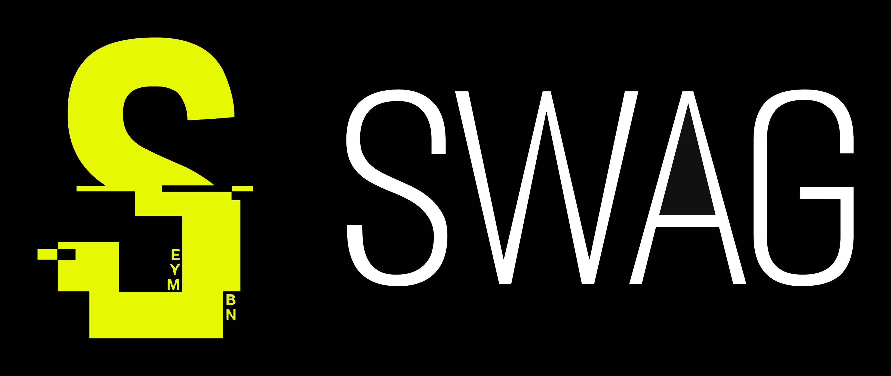

SWAG Programming Language
A Modern Playground
Swag is a systems programming language crafted for fun, offering a fresh alternative to the increasingly cumbersome C++.
This is my third compiler project (the previous ones powered AAA game engines), but Swag represents a significant leap forward in terms of capability and design.
Flexible and Powerful
The Swag compiler can generate high-performance native code using a custom x64 backend or LLVM, and it can also function as an interpreter for scripting purposes.
Think of it as C++, but with the ability to make everything constexpr.
Cutting-Edge Features
Swag offers advanced features like full compile-time evaluation, type reflection at both runtime and compile time, meta-programming, generics, a powerful macro system, and much more.
It's designed to be both fun and highly productive.
Explore a detailed, single-script implementation of the Flappy Bird game.
Swag is still under active development! Everything, including this website, is a work in progress. Features and details are subject to change until we officially reach version 1.0.0. Stay tuned and enjoy the ride!
Swag is open source and released under the MIT license. The compiler source code is available on GitHub. Check out our YouTube channel for coding sessions.
As the language evolves, some videos might show outdated syntax. However, the corresponding scripts on GitHub are always up-to-date and functional.
This website and all related documentation were generated using Swag. The compiler can also produce HTML from markdown files and source code.